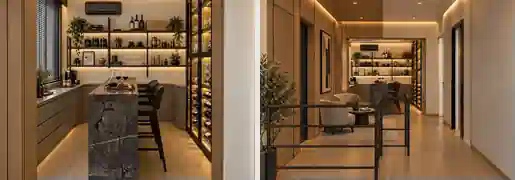
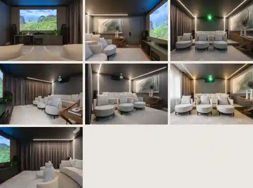
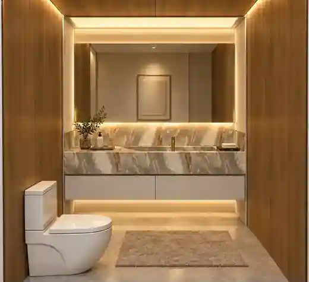
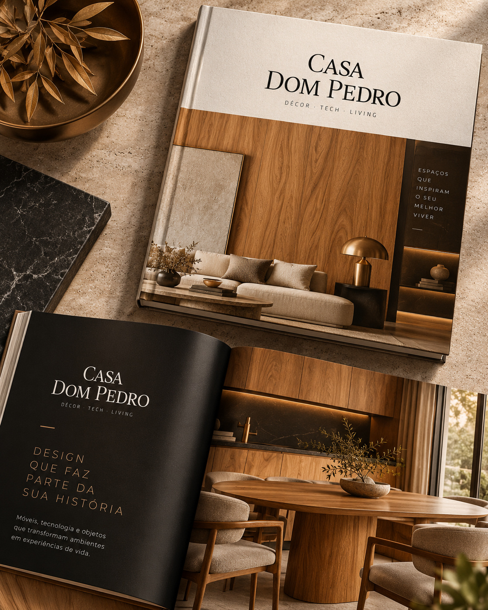
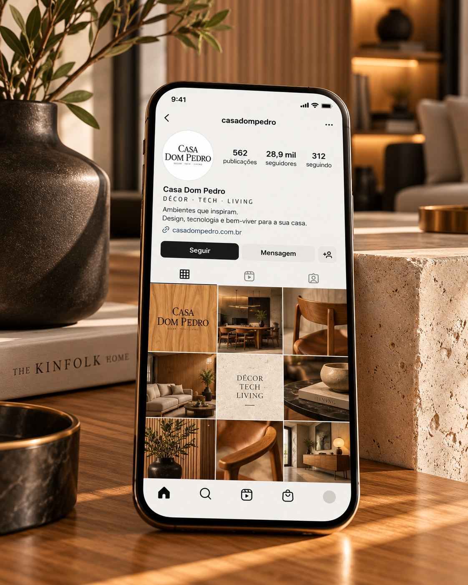
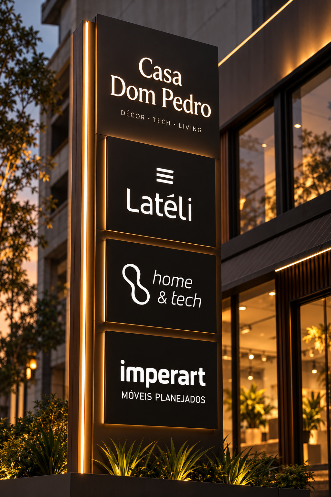

Impresso institucionalCartão de visita
Uma marca pensada para reunir soluções para o morar contemporâneo e abrigar novas frentes com unidade, presença e sofisticação.
O nome traz uma presença clássica, enquanto a construção visual assume um comportamento atual, preciso e arquitetônico. O resultado é uma identidade que equilibra tradição e contemporaneidade com uma estética sóbria, material e duradoura.
Os ambientes mostram como a Casa Dom Pedro ganha presença por meio da arquitetura, dos materiais e da experiência. A seleção abaixo preserva a leitura de cada espaço e amplia a dimensão sensorial da marca.



O sistema visual se adapta a diferentes escalas e canais, mantendo a mesma leitura premium: impresso, editorial, web e social media.


Casa Dom Pedro reúne três especialidades complementares em uma experiência integrada. Cada marca preserva sua identidade, enquanto a Casa cria unidade, hierarquia e presença para o conjunto.



A identidade nasce de uma base sólida, mas não está limitada por ela. Foi desenvolvida para acompanhar novas marcas, novas soluções e novas formas de viver — sempre com clareza, sofisticação e unidade.